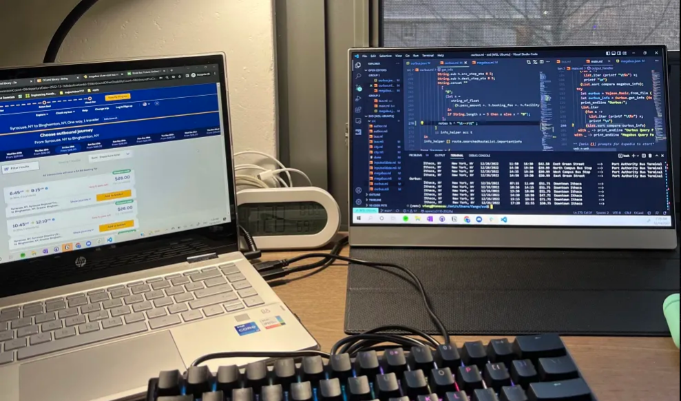

GestureHome
A home automation system that allows users to control devices through hand gestures, utilizing the Raspberry Pi and Computer Vision.
Time Ball
Raspberry Pi-powered replica of historic time balls to mimic their noon drop, blending history and technology for a showcase at the South Street Seaport Museum.

OCaml Travel
Terminal-based application that scrapes data from websites providing bus services such as MegaBus and OurBus and outputs all available routes based on user input.